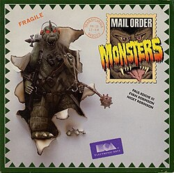
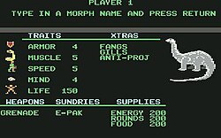

Mail Order Monsters
Mail Order Monsters is an action-strategy game created by Paul Reiche III, Evan Robinson and Nicky Robinson. Electronic Arts published the Commodore 64 edition in 1985 and the Atari 8-bit version followed in 1986; Ariolasoft published the game in Europe. Players create and customise creatures, buying weapons and unusual abilities before sending them into battle. The game supports head-to-head combat, capture the flag and a single-player contest against computer-controlled opponents. Terrain affects the fighting, while successful monsters can be saved to disk and improved through later victories. Its mixture of creature customisation, persistent combatants and competitive action has since been recognised as an early forerunner of later monster-battling games.